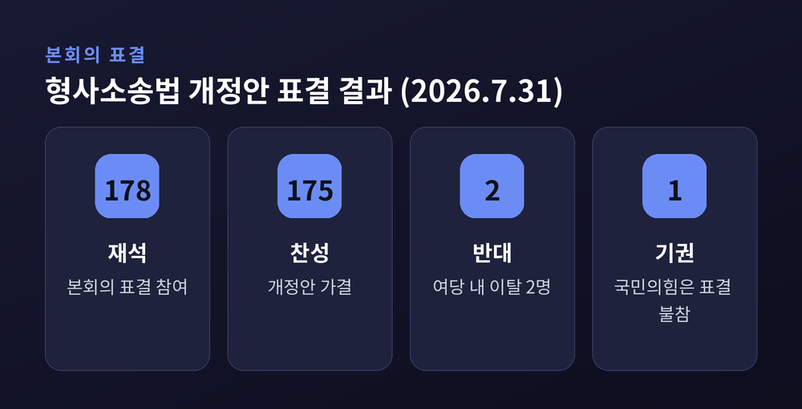
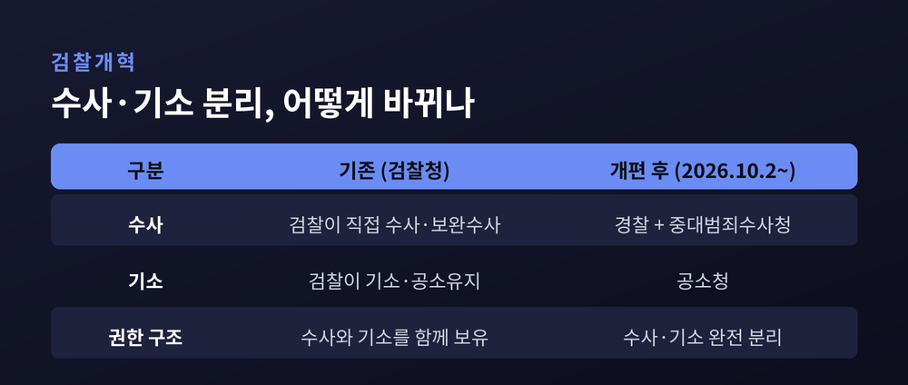

검찰 수사권 완전 폐지, 7월 임시국회 필리버스터 뚫고 형사소송법 통과 — 중대범죄수사청 신설까지 총정리
이번 글에서는 2026년 7월 임시국회에서 벌어진 필리버스터 정국과 검찰개혁의 핵심을 정리해 보겠습니다.
7월 31일, 검사의 수사권을 없애는 형사소송법 개정안이 국회 본회의를 통과했습니다. 같은 회기에서 비쟁점 민생법안은 35일 만에 처리됐습니다. 무엇이 결정됐고, 여야는 왜 맞섰는지 차분히 짚어보겠습니다.
무슨 일이 있었나
7월 31일 밤, 국회 본회의에서 형사소송법 개정안이 가결됐습니다.
표결 결과는 재석 178명 중 찬성 175명, 반대 2명, 기권 1명이었습니다. 전날부터 무제한토론, 이른바 필리버스터를 이어 온 국민의힘은 표결에 참여하지 않았습니다.

이 개정안의 핵심은 하나입니다. 검사의 직접 수사권과 보완수사권을 전면 폐지하는 것입니다. 쉽게 말해 검사가 스스로 수사에 나설 권한 자체를 없애는 조치입니다.
이 법은 홀로 서 있는 법이 아닙니다. 오는 10월 2일 출범하는 공소청과 중대범죄수사청의 뒤를 잇는 후속 입법입니다. 검찰이 쥐고 있던 '수사'와 '기소'라는 두 권한을 완전히 갈라놓는 마지막 조각인 셈입니다.
통과 과정도 짚어둘 필요가 있습니다. 국민의힘이 필리버스터에 들어가자, 더불어민주당은 7월 30일 오후 4시 6분에 토론을 끝내자는 종결동의안을 냈습니다. 필리버스터는 종결동의안이 제출된 지 24시간이 지난 뒤, 재적 의원 5분의 3 이상이 찬성하면 멈출 수 있습니다. 이 요건이 채워지자 토론은 종결됐고, 곧바로 표결로 이어졌습니다.
왜 중요한가
검찰이 수사권과 기소권을 함께 가진 구조는 70여 년간 이어졌습니다.
수사로 사건을 파고들 권한과, 그 사건을 법정에 세울 권한을 한 기관이 모두 쥐고 있었습니다. 그 힘이 지나치게 크다는 지적은 오래된 논쟁이었습니다.
이번 개정으로 그 구조가 바뀝니다. 수사는 경찰과 중대범죄수사청이, 기소는 공소청이 나눠 맡는 방향입니다.
예전에는 검사가 직접 캐묻고 직접 기소했습니다. 앞으로는 수사와 기소의 주체가 분리됩니다. 한국 형사사법 체계의 뼈대가 달라지는 변화입니다.
그래서 여러 언론은 이 통과를 두고 "역사적 전환점"이라는 표현을 붙였습니다. 평가는 갈리지만, 사안의 무게가 가볍지 않다는 점에는 이견이 적습니다.
검찰개혁의 큰 그림 — 공소청과 중수청
이번 형사소송법 개정은 갑자기 튀어나온 것이 아닙니다.
앞서 2026년 3월, 국회는 공소청법과 중대범죄수사청 설치법을 잇따라 통과시켰습니다. 그 결과 검찰청은 10월 2일자로 폐지되고, 그 기능이 두 기관으로 나뉩니다.
정리하면 이렇습니다. 공소청은 기소와 공소유지를 맡습니다. 중대범죄수사청은 부패·경제 같은 중대범죄 수사를 담당합니다. 검사에게 남아 있던 수사 권한은 이번 형사소송법 개정으로 마저 사라집니다.

물론 우려도 함께 담겼습니다. 검찰이 빠진 자리에서 경찰의 수사권이 지나치게 커질 수 있다는 지적입니다.
이에 개정안은 몇 가지 장치를 뒀습니다. 경찰이 최장 2개월 안에 수사를 마치도록 했고, 모든 수사 자료를 형사사법정보시스템에 기록하게 했습니다. 경찰이 사건을 넘기지 않기로 결정해도, 고발인이 이의를 제기할 길을 열어 뒀습니다.
여야는 왜 맞섰나 — 양측의 입장
이 사안은 정치적으로 민감합니다. 그래서 양쪽 주장을 나란히 놓고 보겠습니다.
여당인 더불어민주당의 명분은 분명합니다. 수사와 기소를 완전히 분리해, 검찰의 과도한 권한을 견제하겠다는 것입니다. 70여 년 이어진 권한 구조를 바꾸는 개혁이라고 규정합니다.
야당인 국민의힘의 반발도 분명합니다. 보완수사권은 남겨야 한다는 입장입니다. 국민의힘은 "검사의 보완수사권은 사회적 약자와 흉악범죄 피해자를 보호하기 위한 최소한의 안전장치"라고 주장합니다. 앞서 중수청과 공소청의 시행을 1년 유예하는 법안을 당론으로 발의하기도 했습니다.
국민의힘은 여기서 한발 더 나아가 '범죄피해 보호 3법'을 당론으로 내걸었습니다. 지도부는 흉악범죄 피해자를 직접 만나며 '피해자 보호'를 반대의 명분으로 앞세웠습니다. 검찰의 보완수사가 사라지면 억울한 피해자가 늘어날 수 있다는 주장입니다.
대통령실은 절제된 태도를 보였습니다. "국회의 입법 과정과 최종 판단을 존중한다"는 것이 공식 입장이었습니다.
찬성 측은 권력 견제를, 반대 측은 피해자 보호를 앞세웁니다. 같은 제도를 두고 무게를 싣는 지점이 다른 셈입니다. 어느 쪽 말에도 곱씹어 볼 대목이 있습니다.
흥미로운 점은 여당 안에서도 표가 갈렸다는 사실입니다. 법조인 출신인 곽상언 의원은 반대, 이소영 의원은 기권했습니다. 제한적으로라도 보완수사권을 남겨야 한다는 소신이었습니다. 개혁의 방향에는 공감하되, 속도와 방식에는 이견이 있었던 것으로 보입니다.
필리버스터 한편, 민생법안은 35일 만에
이 대치의 한복판에서도 국회가 멈춰 서기만 한 것은 아닙니다.
7월 23일, 국회는 비쟁점 민생법안 23건을 처리했습니다. 민생법안이 국회 문턱을 넘은 것은 6월 18일 이후 35일 만이었습니다.
공중화장실 불법촬영 탐지시스템 설치, 지하주차장 불연재료 사용 의무화 같은 법안이 여기 포함됐습니다. 쟁점 법안을 둘러싼 대치와, 생활에 밀접한 법안의 처리가 한 회기 안에서 엇갈린 셈입니다.
조정식 국회의장은 이날 "국민께서 기다려 주신 시간만큼 국회가 짊어져야 할 책임의 무게는 더욱 무겁다"고 말했습니다.
앞으로의 전망
이야기는 아직 끝나지 않았습니다.
형사소송법 처리 직후, 패스트트랙 심사 기한을 최장 330일에서 90일로 줄이는 국회법 개정안이 상정됐습니다. 국민의힘은 여기에도 필리버스터로 맞섰습니다.
다만 7월 임시국회 회기가 자정에 끝나면서, 이 필리버스터는 자동으로 종료됐습니다. 해당 법안은 8월 임시국회 첫 본회의에서 곧바로 표결에 부쳐질 전망입니다.
필리버스터가 이렇게 자주 등장하는 배경도 눈여겨볼 대목입니다. 소수 야당이 표결을 막을 마지막 수단으로 무제한토론을 택하고, 다수 여당은 종결동의로 이를 넘어서는 구도가 반복됩니다. 여당이 밀어붙이는 국회법 개정안은 이 지연 절차 자체를 손보려는 시도이기도 합니다. 그래서 야당은 "소수의 발언권을 줄이는 것"이라며 반발합니다.
10월 2일이 되면 검찰청은 역사 속으로 들어가고, 공소청과 중대범죄수사청이 그 자리를 대신합니다. 제도가 실제로 어떻게 작동할지는 그때부터 확인할 수 있습니다.
정리하면 이렇습니다.
검찰의 수사권을 떼어내는 큰 방향은 정해졌습니다. 남은 질문은 방향이 아니라 운영입니다. 새 제도가 국민의 안전과 권리를 실제로 지켜낼 수 있느냐에 성패가 달렸습니다.
제도는 바뀌었고, 이제 증명이 남았습니다.
10월의 출범 이후를 조금 더 지켜봐야겠습니다.